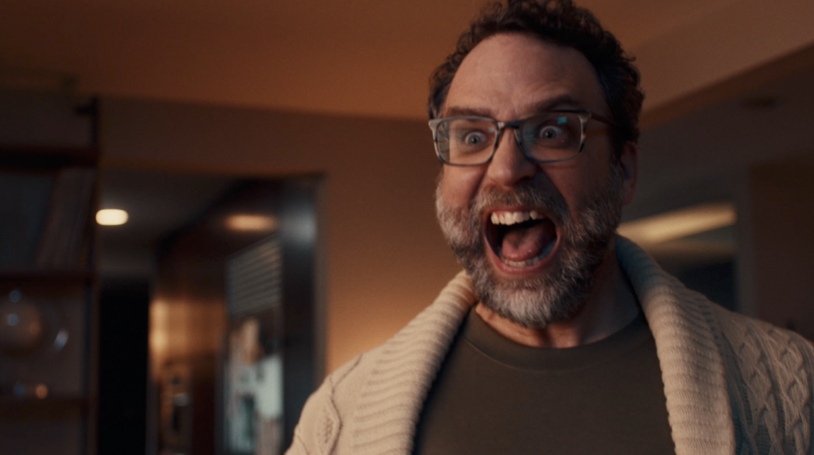

Priceline The Negotiator
Big Idea
Shatner’s footage flew to Warsaw and played back for Randall before rolling, so both performances had something to calibrate against.
Challenge
The Negotiator is one of advertising’s most iconic characters. Shatner played him for 25 years. This campaign retires the original and introduces Randall Park as the new face.
Impact
Early screenings are strong, with features in AdAge and Yahoo. A genuine cultural moment, closing a chapter that’s run since the late 90s.
Insight
With that much distance between shoots, the question was how to make two productions feel like one world. The answer: treat tone as the one constant everything else has to serve.